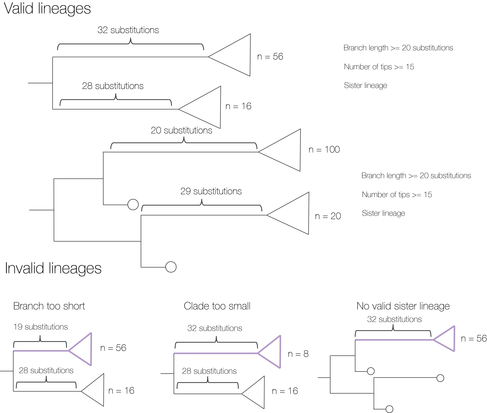
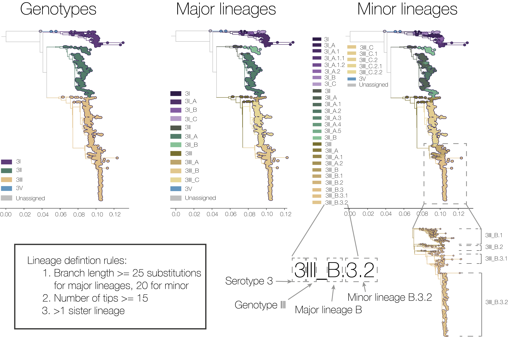

This page contains information about our lineage system and instructions on how to designate new lineages. In other words, these are the rules for suggesting a new sub-genotypic grouping. If you are looking for where to assign an existing lineage to new sequences, please use one of our partner assignment tools, found on the Resources Page.
This system is built off experience developing lineage systems for other viruses of public health importance, and is the result of a global collaboration of researchers and public health professionals. It aims to provide additional spatial and temporal resolution with which to discuss the large genetic diversity of dengue virus. Specifically, it splits up existing genotypes into smaller groups and provides a standardized, neutral naming system.
Broadly speaking, we define major and minor lineages within each genotype. These lineages are defined by the same rules., but use different nomenclature. In theory, minor lineages should be more useful for country-specific questions, and major lineages for regional questions. Of course, it won't always necessarily work like that - some minor lineages are very widespread, and some major lineages are geographically limited.
We designated an initial set of lineages based on all publicly available whole genome sequences with coverage greater than 70% in mid-2023. We envision two ways of generating new lineage suggestions. The first is through community effort via a github repo, which is what this page is designed to help with. Here, members of the dengue research/public health community can suggest new lineages to help with their surveillance efforts. These will be reviewed with some regularity and given a “putative” name. The second method is an annual review, where all publicly available whole genome data is run through custom scripts to ensure that all new lineages have been identified, including appropriate putative ones suggested throughout the year. These will then be reviewed by an advisory board and assignment tools are updated.
The community effort therefore is a way of getting a lineage designation in between annual reviews, although if it is a valid lineage, rest assured that it will be included in the system at the annual review regardless of whether it is pitched on the github repository.
There are three rules which must be met for a putative new lineage to be named.
We note that we designate lineages based on defining nodes - i.e. all of the tips downstream of this node will be included in the lineage definition.
The branch leading up to the defining node should be at least 25 substitutions long
There should be at least 15 sequences in the putative clade
There should be at least one sister lineage the same number of nodes away from the parent defining node. This may be an existing or a new lineage.
We understand that this third rule in particular may be challenging to do manually, and so we provide some python scripts for identifying sister lineages here. We do not recommend using the scripts on this repository for branch length because they are specific to our alignment length.
The figure below shows examples of acceptable and non-acceptable lineage suggestions:

The nomenclature system is split into two levels, named major and minor lineages. As it stands, these levels have the same defining rules but use different naming systems.
Major lineages are defined using letters and minor lineages are defined using dots and numbers. Importantly, there is only one level of major lineages, but there can be as many nested levels of minor lineages as required.

Example of the lineage system using DENV-3. The long-hand description “Dengue virus serotype 3, genotype III, lineage C.2” can be abbreviated as “DENV-3III_C.2” (read as: “dengue three-three-C-dot-two”).
To come up with a new name for a putative lineage:
Identify which is the parent lineage. For example, if it falls into 2V_A then that is what the name will start with.
Check which names are already used in this parent lineage.
For putative major lineages: choose the next letter in the roman alphabet in that genotype. Eg if there is already genotype I major lineage A and B, the next lineage will be genotype I major lineage C.
For putative minor lineages: choose the next number in the parent lineage. For example if 2V_A.1.1 and 2V_A.1.2 exist, then the next lineage will be 2V_A.1.3.
Within a parent lineage, the numbers and letters are somewhat arbitrary - i.e. 2V_A.1 and 2V_A.2 are not necessarily immediate sister lineages, they were simply designated in that order. This is in part because the vertical axis of a vertical rectangular phylogeny (i.e. all of the phylogenies on this website) is itself arbitrary, and branches can be rotated around nodes without changing the topology.
You have two options. The first is to just wait for the annual review - if the lineage meets all of our criteria and the data is on GenBank, then it will be designated as part of this process.
The second is to submit an issue to our github repository using the issue template provided by clicking on issues, and then “new issue”.